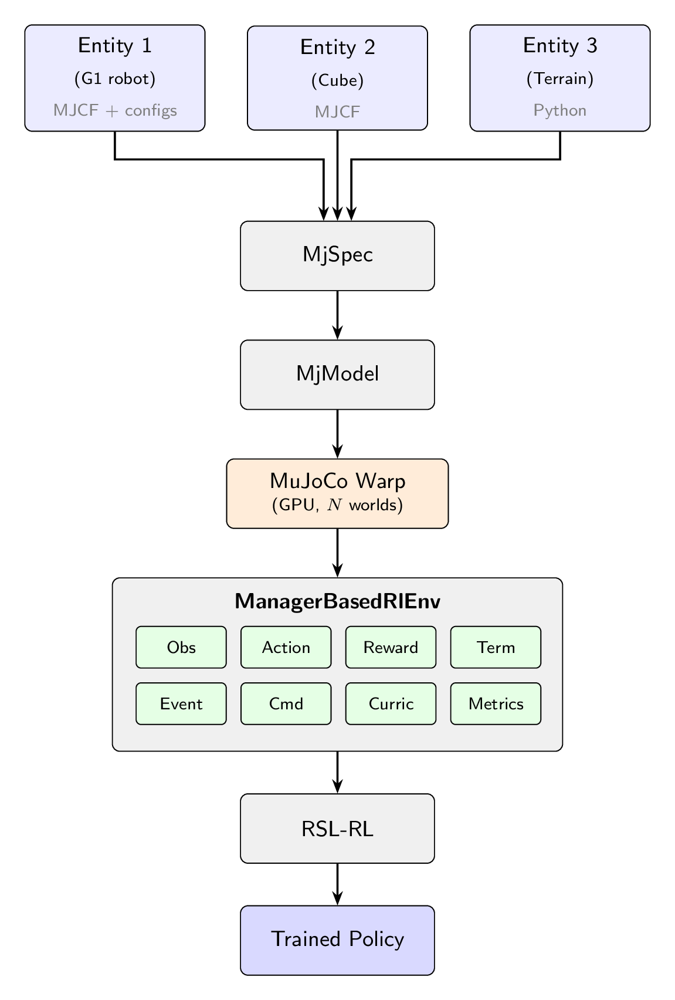

Architecture Overview#
mjlab is organized into two layers: a simulation layer that models the robot and world, and a manager layer that defines the reinforcement learning problem on top of it. Understanding this separation is the fastest way to build a mental map of the system.
{kind=link}

Entities are composed into an MjSpec, compiled, and transferred to MuJoCo Warp for GPU simulation. The ManagerBasedRlEnv orchestrates the MDP; RSL-RL handles training.#
The simulation layer#
Scene pipeline.
mjlab constructs scenes by composing entity descriptions into a single
MjSpec.
Each entity starts from an
MJCF file
loaded via MjSpec.from_file(). Users who define everything in XML can
use this directly. For more control, Python dataclasses can extend or
override properties on the loaded spec: actuators, collision rules,
materials, sensors, and initial state. This hybrid approach lets users
start from existing MuJoCo models and layer on task-specific configuration
without modifying the original XML. The composed specification is compiled
into an MjModel on the CPU, then transferred to the GPU via
MuJoCo Warp,
which is built on NVIDIA Warp.
MuJoCo Warp.
MuJoCo Warp is a GPU-accelerated backend for MuJoCo. It preserves
MuJoCo’s MjModel/MjData paradigm but adds a leading world
dimension: a single MjData object holds the state of N independent
simulation instances in parallel, enabling thousands of environments to
be stepped simultaneously. Model parameters are shared across all worlds
by default, and individual fields can be expanded to vary per-world when
domain randomization requires it. mjlab captures the simulation step as a
CUDA graph: the kernel
execution sequence is recorded once and replayed on subsequent calls,
eliminating CPU-side dispatch overhead.
Note
CUDA graph capture is a one-time cost at environment startup. Per-episode resets and domain randomization events run as regular Python between graph replays and do not break the capture.
Components. The simulation layer provides four core components, each with its own documentation page:
Entity: a robot, a manipulated object, or a static object such as terrain, defined by an MJCF description plus optional Python configuration for actuators, collision rules, and initial state.
Actuators: how entities are controlled. Users can wrap actuators already defined in MJCF or create new ones from Python configuration.
Sensors: how the world is observed. Includes MuJoCo-native sensors as well as custom sensors like RGB-D cameras and raycasters.
Scene: scene composition and environment placement.
The manager layer#
On top of the simulation layer, mjlab adopts the manager-based environment design introduced by Isaac Lab. Users define their environment by composing small, self-contained terms (reward functions, observation computations, domain randomization events) and register them with the appropriate manager. Each manager handles the lifecycle of its terms: calling them at the right point in the simulation loop, aggregating their outputs, and exposing diagnostics.
Terms can be plain functions for stateless computations, or classes that
inherit from ManagerTermBase when they need to cache expensive setup
(such as resolving regex patterns to joint indices at initialization) or
maintain per-episode state through a reset() hook.
Environments are configured through ManagerBasedRlEnvCfg, a plain
dataclass that holds term configuration dictionaries for each manager.
from mjlab.envs import ManagerBasedRlEnvCfg
cfg = ManagerBasedRlEnvCfg(
decimation=4, # 4 physics steps per policy step
episode_length_s=20.0,
scene=..., # SceneCfg: terrain, entities, sensors
sim=..., # SimulationCfg: timestep, solver, integrator
observations={...}, # ObservationManager terms
actions={...}, # ActionManager terms
rewards={...}, # RewardManager terms
terminations={...}, # TerminationManager terms
events={...}, # EventManager terms (resets, DR)
commands={...}, # CommandManager terms (velocity targets, etc.)
curriculum={...}, # CurriculumManager terms
metrics={...}, # MetricsManager terms
)
The eight managers
ObservationManager: assembles observation groups with configurable processing (clipping, noise, delay, history). Supports asymmetric actor-critic. See Observations.
ActionManager: routes the policy’s output tensor to entity actuators, handling scaling and offset. See Actions.
RewardManager: computes a weighted sum of reward terms, scaled by step duration for frequency invariance. See Rewards.
TerminationManager: evaluates stop conditions, distinguishing terminal resets from timeouts. See Terminations.
EventManager: fires terms at lifecycle points (startup, reset, interval). Domain randomization is implemented through event terms. See Events and Domain Randomization.
CommandManager: generates and resamples goal signals (velocity targets, pose targets). See Commands.
CurriculumManager: adjusts training conditions based on policy performance. See Curriculum.
MetricsManager: logs custom per-step values as episode averages. See Metrics.
For the full configuration reference covering all managers, see Environment Configuration.
The environment lifecycle#
Each environment instance passes through four phases.
Build.
Scenecomposes entity MJCF files viaMjSpecand compilesMjModelon the CPU.Simulationuploads the model to the GPU via MuJoCo Warp, allocating a singleMjDatawith N parallel worlds. CUDA graphs forstep,forward,reset, andsenseare captured.Initialize. Managers are constructed from the term configuration dictionaries. Regex patterns are matched to joint, body, and geom indices. Observation history and delay buffers are allocated. Model fields required by domain randomization terms are expanded from shared to per-world storage, and CUDA graphs are rebuilt to reflect the new layout. Startup events are fired once.
Reset. Called at the start of training and whenever an environment terminates or times out. The
EventManagerfiresresetterms, which return the scene to an initial state with optional randomization. Command targets are resampled. Observation history buffers are cleared.Step. The policy action is processed by the
ActionManager. The physics simulation advancesdecimationtimes, with actuator commands applied and entity state updated each sub-step. After the decimation loop, theTerminationManagerchecks stop conditions, theRewardManagercomputes the reward signal, and any terminated environments are reset. A singleforward()call refreshes derived quantities for all environments. TheCommandManageradvances or resamples goals. Interval events fire if scheduled. Sensors update. TheObservationManagerassembles the observation for the next policy query.
The step sequence in order:
action_manager.process_action(action)
for _ in range(decimation):
action_manager.apply_action()
sim.step()
scene.update()
termination_manager.compute()
reward_manager.compute()
metrics_manager.compute()
[reset terminated envs]
sim.forward()
command_manager.compute()
event_manager.apply(mode="interval")
sim.sense()
observation_manager.compute()
With this mental model in place, the Concepts pages cover each simulation layer component in detail, and The Manager Layer pages walk through each manager’s configuration and built-in terms. If you are coming from Isaac Lab, Migrating from Isaac Lab describes the key API differences.